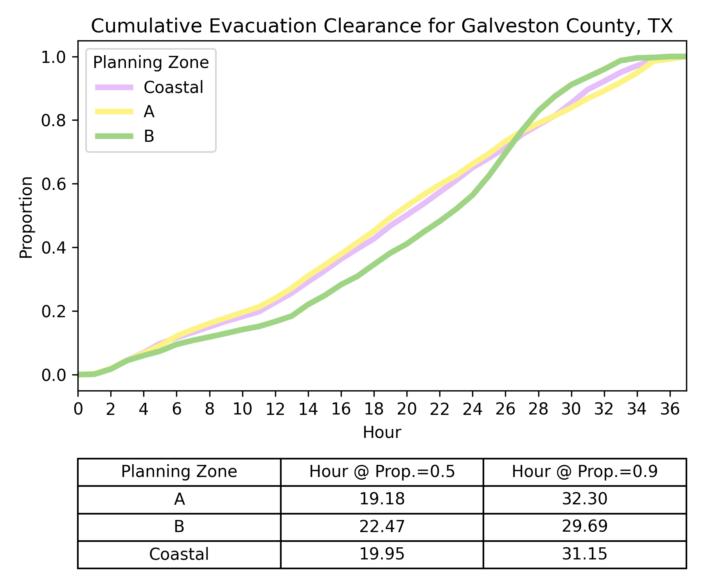
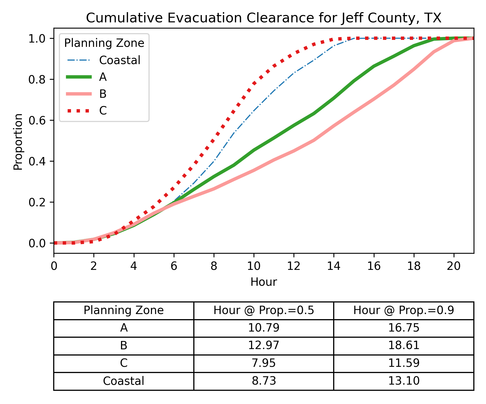
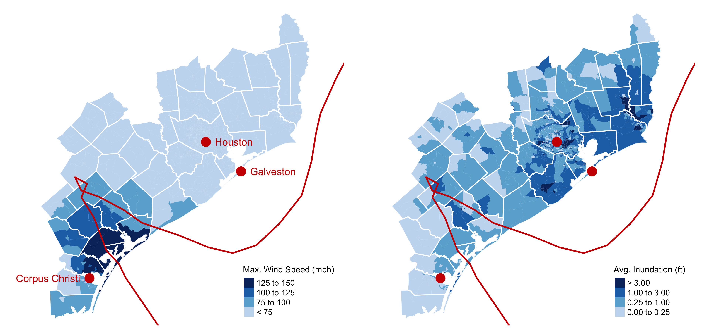
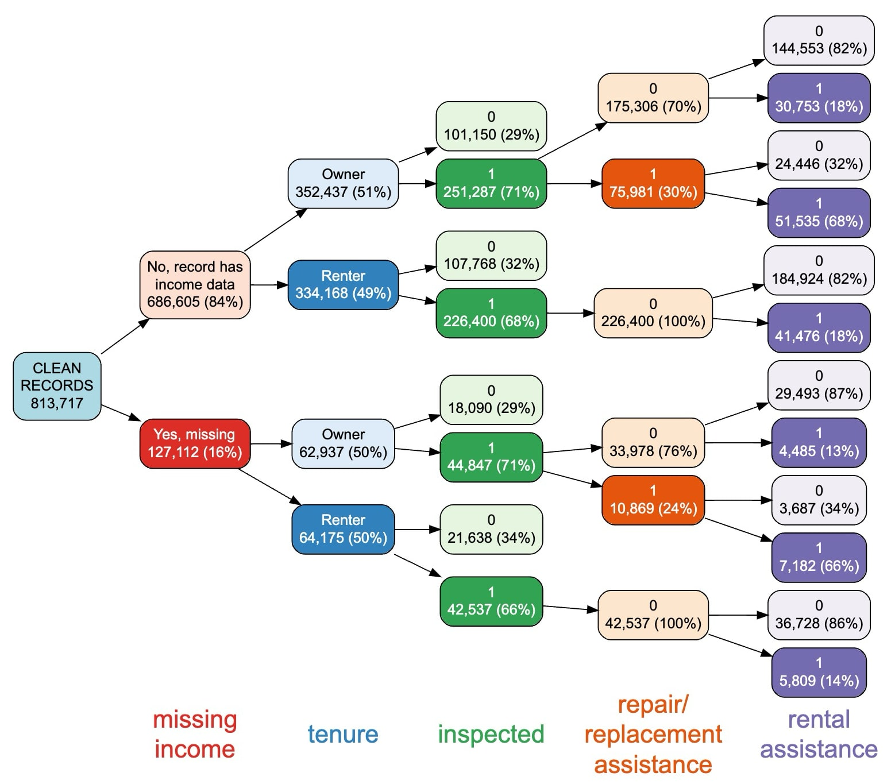
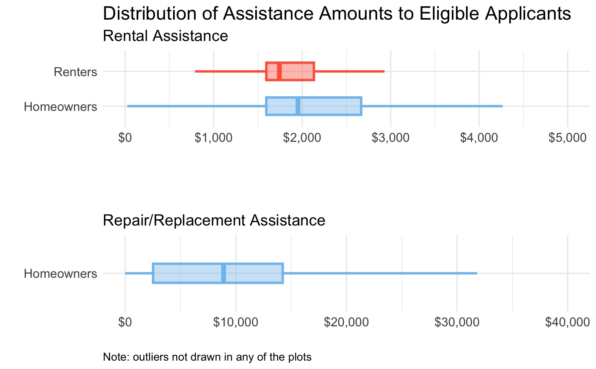
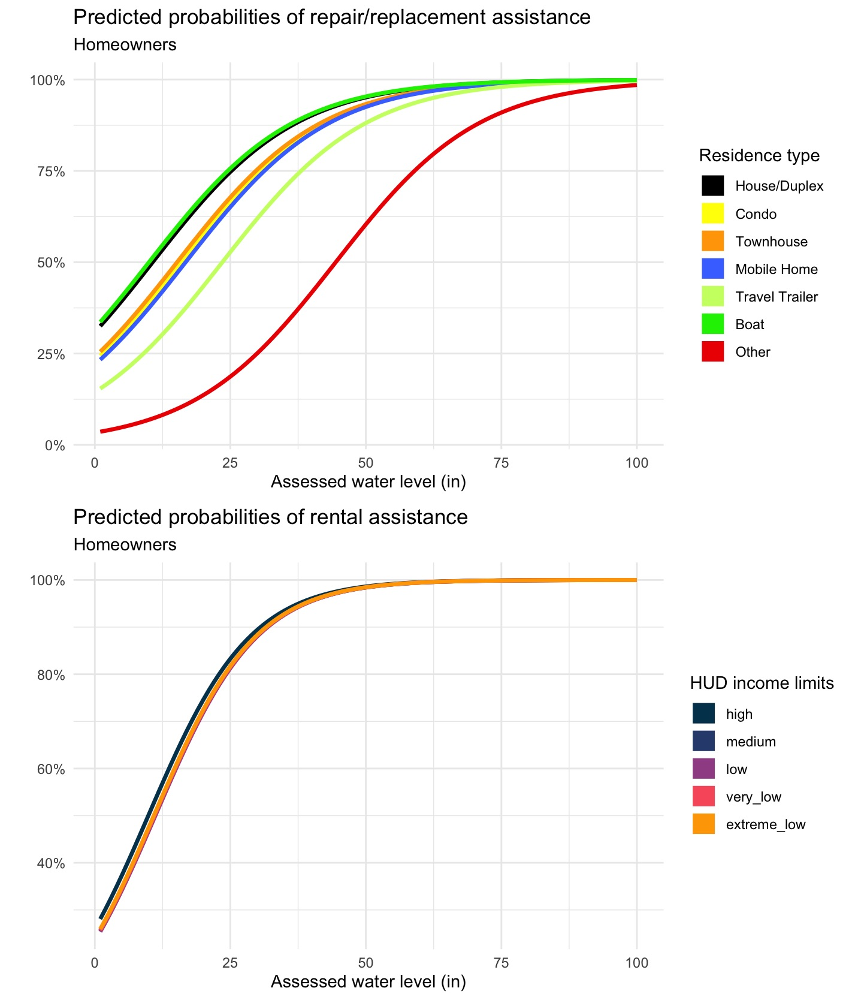
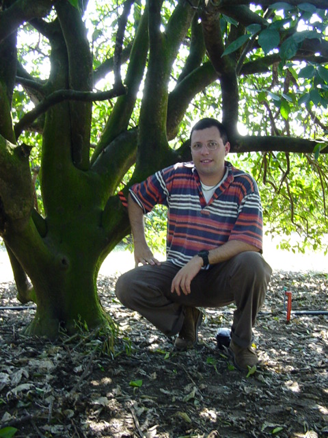
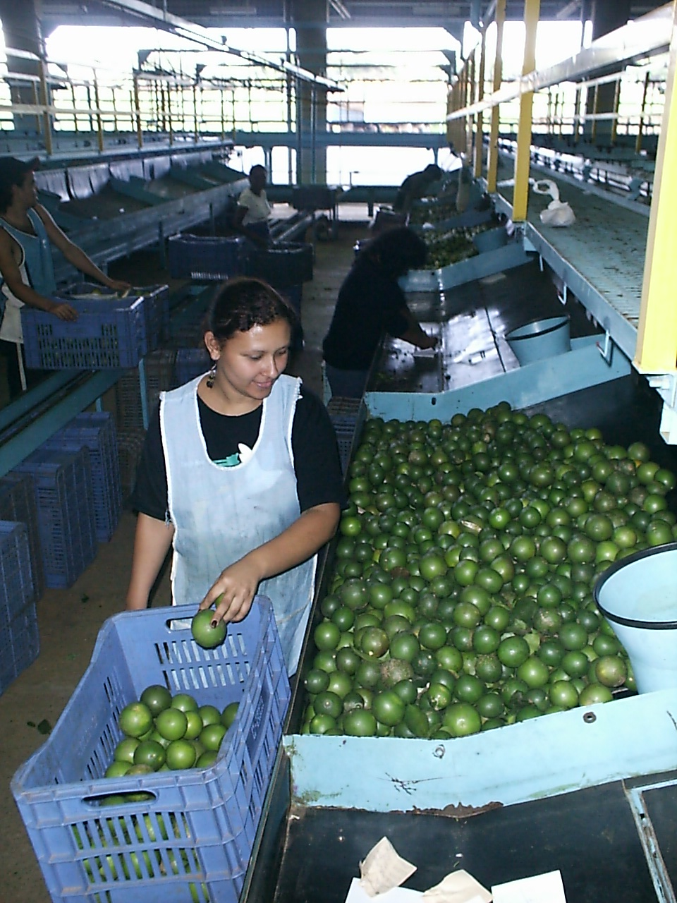
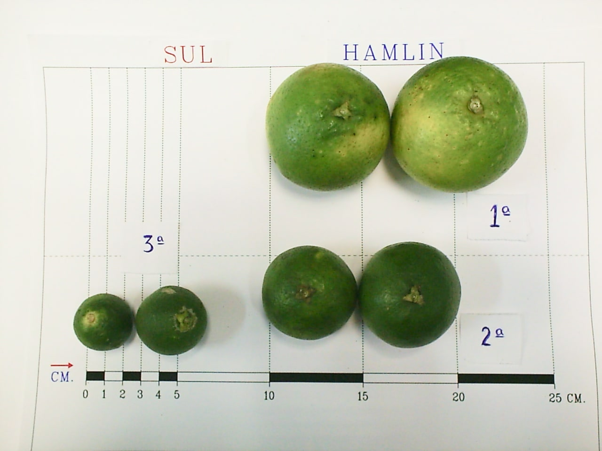

Hazard exposure & evacuation modeling: In work with regional disaster-preparedness, emergency responders, and government agencies, Dr. Abuabara developed multi-objective models that integrate hazard data (e.g., hurricane storm surge, flooding, and high speed wind), population characteristics and behavior, transportation network and other infrastructure constraints to assess risks and mitigation strategies. These models have informed evacuation-zone planning, helped identify exposed populations, and supported resilience initiatives for at-risk communities.
Examples of analysis and results:

Public-assistance program evaluation: As a postdoctoral researcher funded by a federal agency, Dr. Abuabara applied probabilistic and causal modeling to assess the effectiveness of federal assistance programs after large disasters. This work required extensive data research, including data cleaning, imputation of missing information, spatial allocation of information, and the identification and removal of duplicate entries. The resulting analytical framework provided evidence-based insights on resource allocation, program design, and policy trade-offs, advancing transparency and accountability in public policy.
Examples of analysis and results:




Industrial forecasting & logistics optimization: For a large citrus-juice producer, Dr. Abuabara built forecasting models and logistics workflows that improved production planning, resource allocation, and operational efficiency, demonstrating the value of data-driven design and systems-level thinking in agro-industrial contexts.
Photos of a derriça work (process of harvesting all the oranges from a tree for the purpose of scientific sampling and crop estimation. This method is used by agricultural research institutions in Brazil and the USA to estimate the total yield of a citrus crop across a large region.



Return home